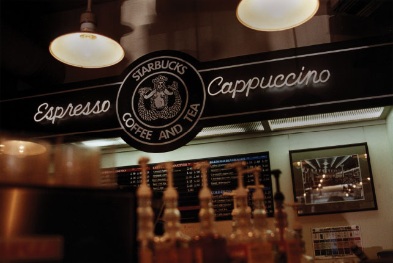

1912 Pike's Mission
Now 1912 Pike brings approachable, memorable and human stories—from the small-lot farmers of Sumatra to our own roasters and baristas for all to discover. Unfolding and revealing the depth of everything Starbucks knows and does, and uncovering all the fascinating details and stories of coffee itself.
All told through the voices of our partners, describing what they have seen, experienced and learned firsthand. Authentic and imperfect, conversational and creative, it is our ever-evolving global journal of the innovation, quest for quality, and passion that unites people around coffee.
